4/9/2026 - Leprechaun Slot, Bottom Up
The winding canyon corridor northwest from the Colorado River and Dirty Devil river confluence has soon pretty cool canyons. Leprechaun canyon is a popular slot canyon with day hikers going the approximately 2 miles roundtrip from the bottom up, or canyoneering folks who go top down. At the trailhead for the bottom up approach is a pair of metal poles with perhaps 7-8 inches of space between them. One wishing to complete the slot should be able to fit between those poles. In other words, and as others have said about this slot. I ended up hiking up as far as possible to pour offs and a confluence of the west and middle forks where there was a pour off, and at 160 lbs barely made it through spots. Anyone can make it to the narrows which were really cool but immediately afterward the slot tightens and forms a long traverse through narrow, dark, and twisting slot, often not wide enough to set a foot down. Above the canyon walls tower above. One unique thing about this slot is that it traverses the previously mentioned obstacles but often at almost a 45 degree angle. Other slots one may walk through but the slant and angle of this one means slow going and a lot of shimmying aka rubbing up against the sandstone walls (and losing some skin). Long pants and a longsleeve shirt would probably be for the best. Leprechaun was really fun and easy to access. Unfortunately there isn't much camping around aside from a small overcrowded primitive area a couple hundred yards south. Other than that, a campers best bet is to head 26 miles north to hanksville for better dispersed camping options.
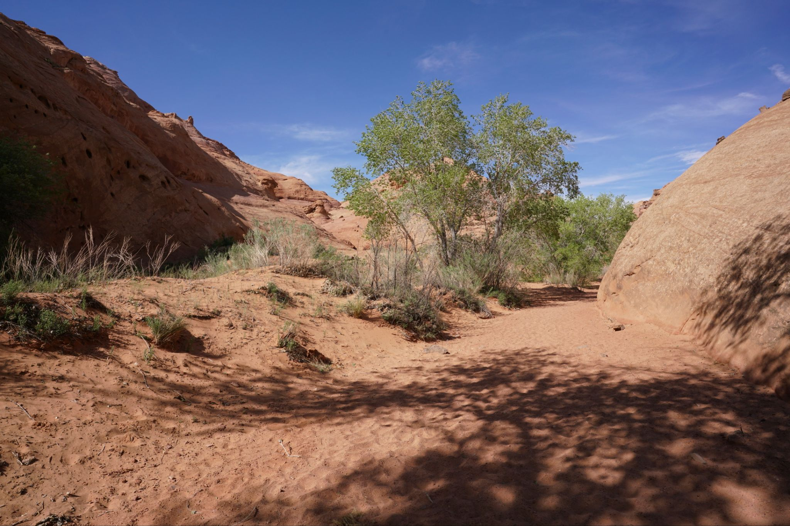
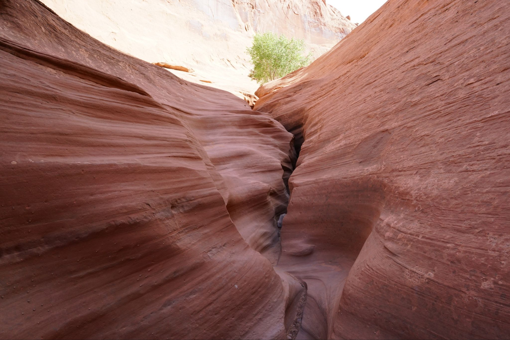
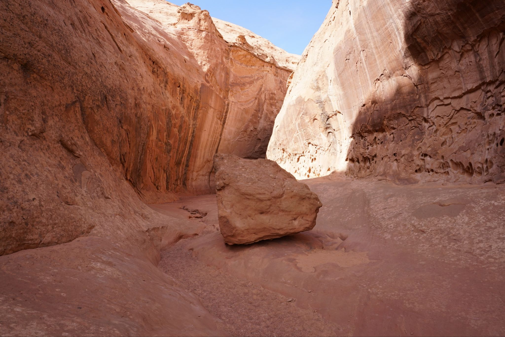
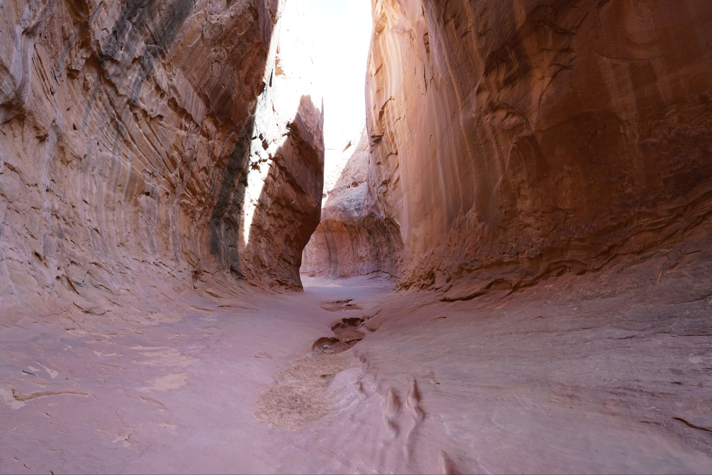
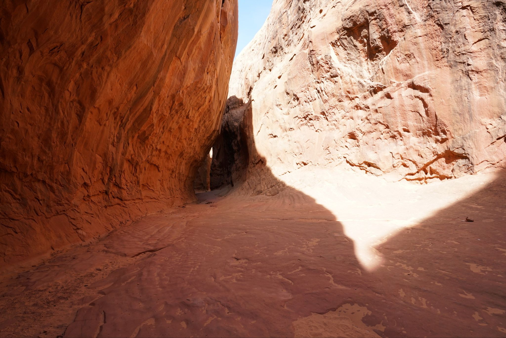
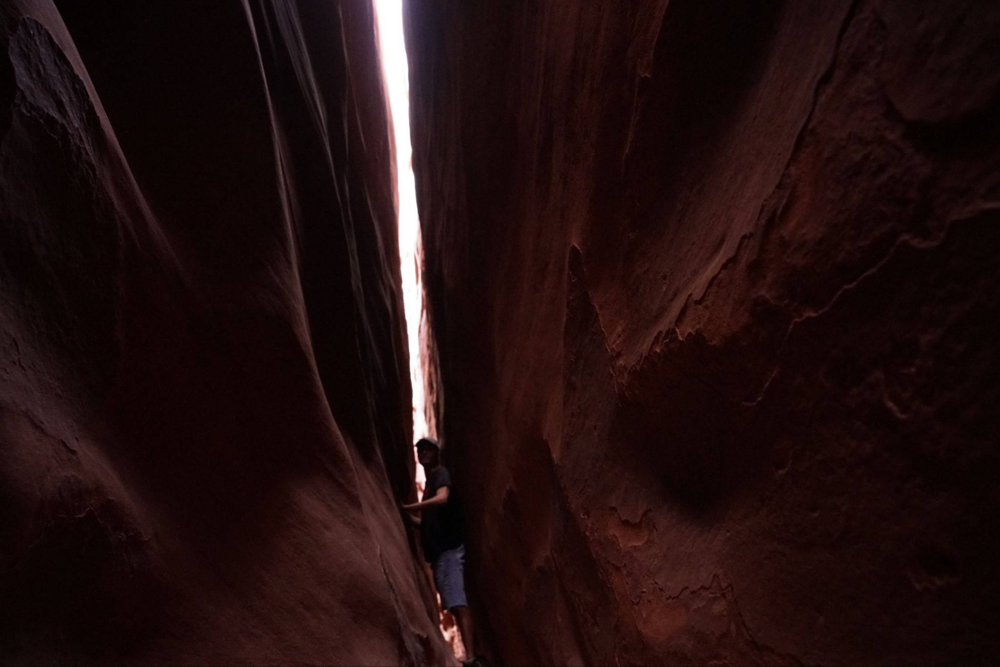
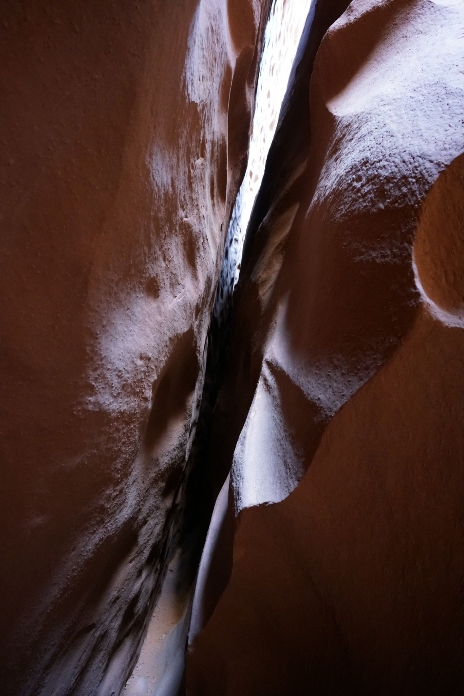
Slot is slanted perhaps 30-40 degrees which makes it difficult to get through. Boulders within do not help either.
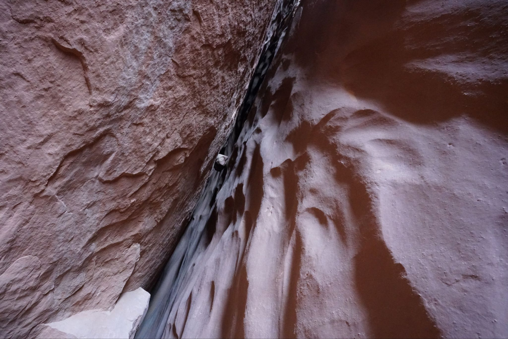
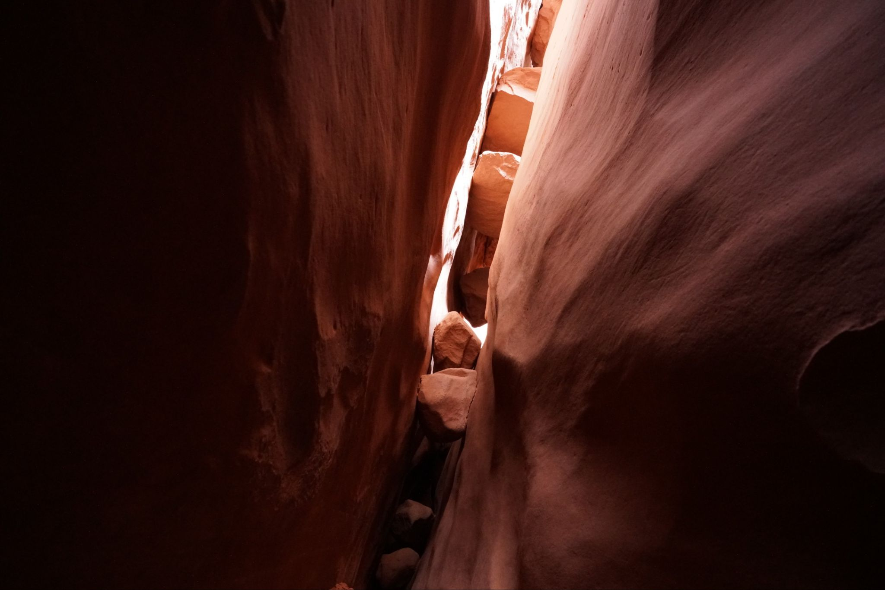
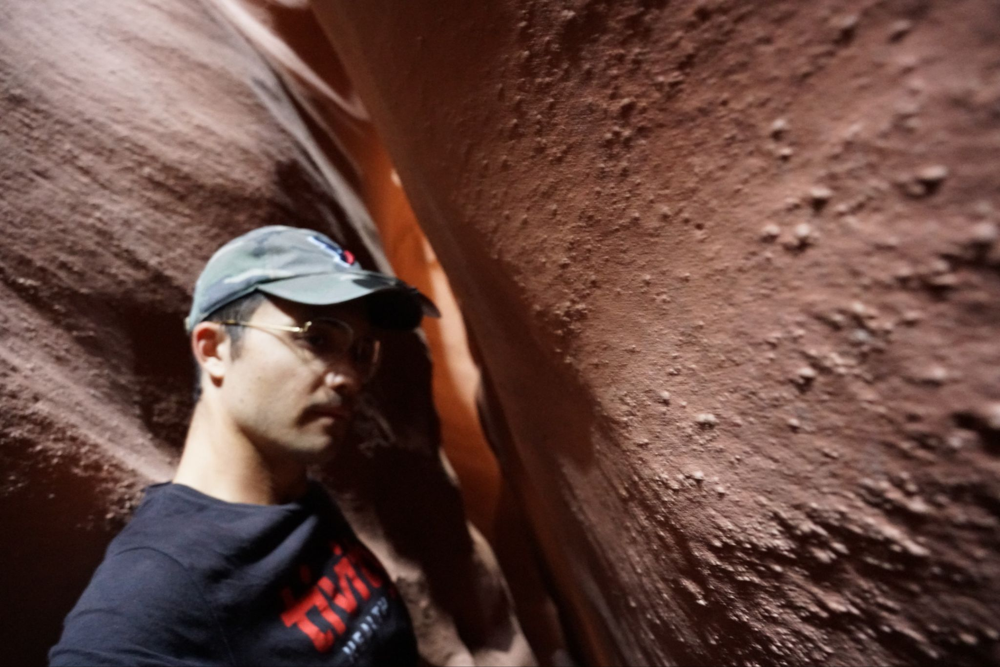
Exiting the slot
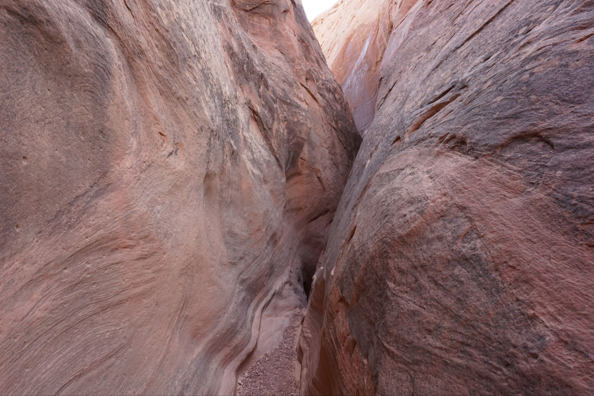
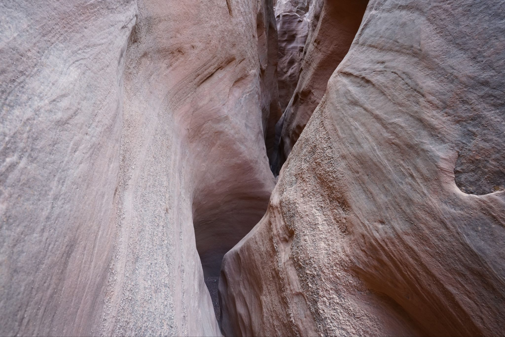
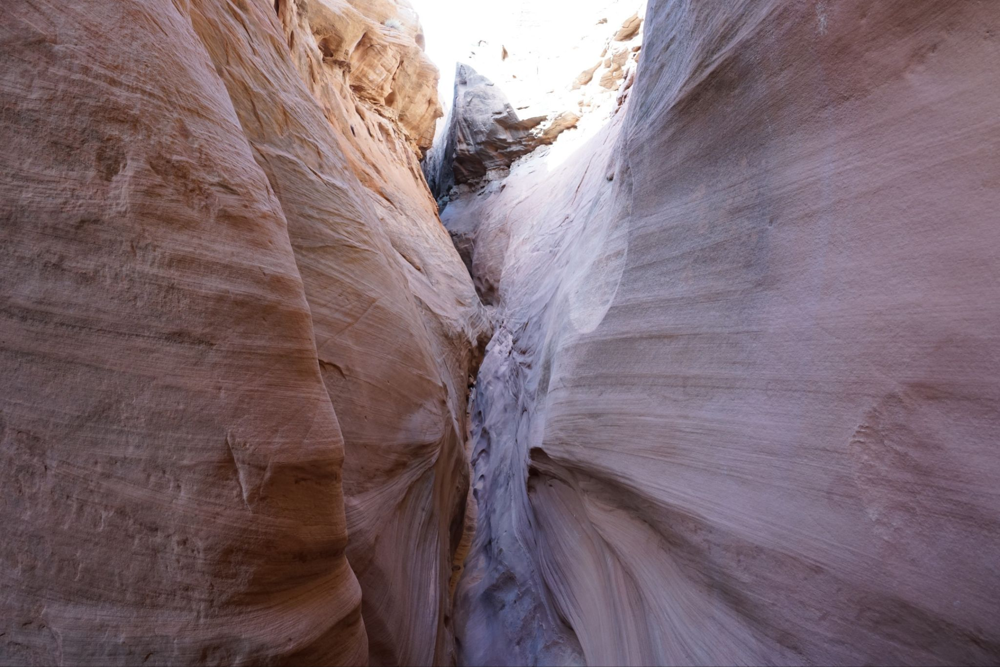
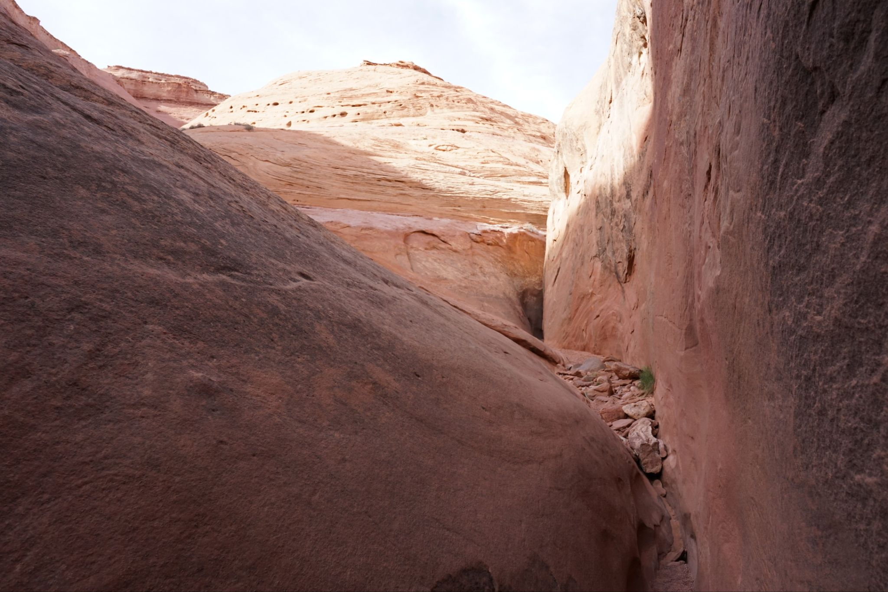
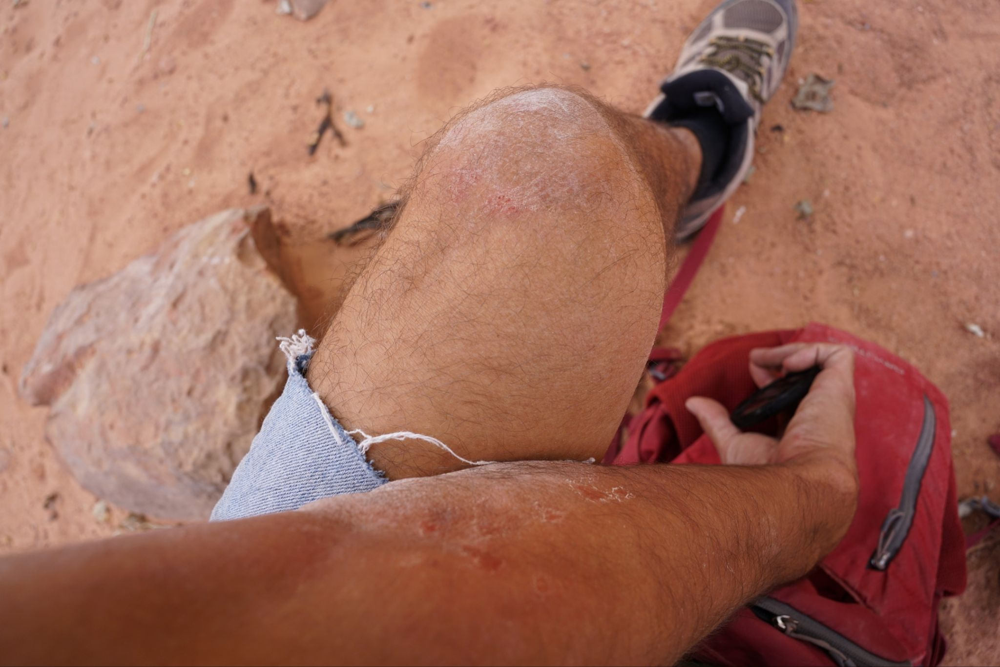